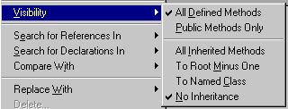

Overriding Methods
Note: This tip will not work in VisualAge for Java 2.0 unless you apply the patches for Version 2.x. Works fine in 3.0.
Overriding methods can be error prone. All it takes is a small misspelling of the method name, the parameter names, or omitting a parameter, and you're no longer overriding; you're defining an all-new method!
VisualAge makes overriding methods so easy it's almost painful!
But overriding is just defining methods, right?
Yes it is, but there's a trick!
So what's the trick already??????
Instead of looking at your class through the workbench's package or class view, open it in the class browser's hierachy pane. (You do this by selecting the class, bringing up it's pop-up menu, and selecting "Open to->Hierarchy.")
Bring up the pop-up menu for the "Methods" pane, and move your mouse to "Visibility."
You'll see the following options:

-
All Defined Methods means that methods are included in the methods pane no matter what their access specifier is
-
Public Methods Only limits the view to public methods
The rest of the options are the interesting ones!
-
All Inherited Methods shows all methods that are inherited by your class,all the way to the root class
-
To Root Minus One shows all inheritied methods except those defined only in the root class. This is actually useful as usually most methods are defined in the root class (like Object) and many you just plain don't care about.
-
To Named Class -- my favorite! This one brings up a list box of all the classes obove yours. You select one and only the methods between your class and that one are shown. This is great for subclasses of Container!
-
No Inheritance shows only the methods in your subclass. This is the default!
So how does this help me override methods?
Simple! Select the visibility setting that allows the method you want to override be shown. For example, if you were subclassing a java.awt.Panel and wanted to override addImpl(), you could select Visibility->To Named Class and pick java.awt.Container from the list.
Now all you need to do is click on addImpl(...) and the method is displayed. Edit it to contain whatever code you want and save it. VisualAge will ask what the save meant:
-
Save the method in the original class that defined it, in this case java.awt.Container
-
Save the method in the subclass (the lowest in the class hierachy pane), in this case your subclass.
By picking the latter, you've saved the method as an override for the base method.
This is great for times when you know you have to override three or four methods but can't remember them all. Just look at the list and pick the ones that look right!
Copyright © 1996-2013, Scott Stanchfield. All Rights Reserved.
Contact me at scott@javadude.com
JavaDude.com Home
Rounded-corner figures based on "More Snazzy Borders" by
Stu Nicholls
 Want
to hear about new stuff at JavaDude.com? Use this RSS Feed!
Want
to hear about new stuff at JavaDude.com? Use this RSS Feed!